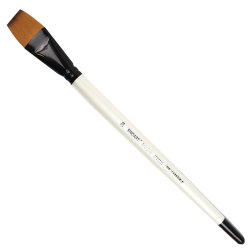
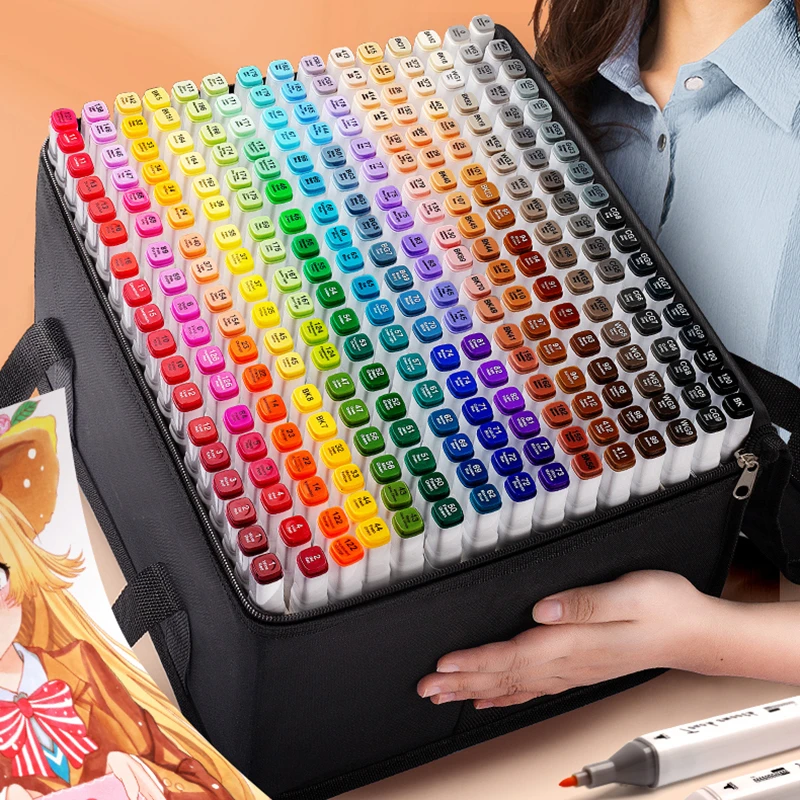
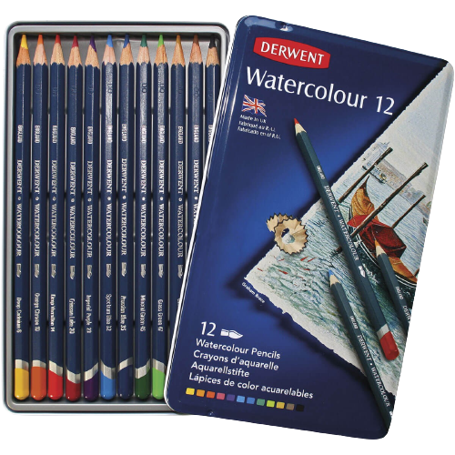

Pincel Chato Artist Series
Sinoart Sfb0235 24 R$16,00
- Cor:Sintético
- Material:Madeira
- Marca:Sinoart
Tipo de pintura Óleo, Acrílica
Sobre este item
Tamanho total do pincel 28.8 cm
Comprimento do pelo 2.4 cm
Largura de da extremidade do pelo 1.9 cm
Para pintura em tela (óleo ou acrílica)
Suas cerdas sintéticas dual color

Touchfive markers
12/24/30/40/60/80/168 cores
esboço marcadores de arte
caneta à base de álcool R$ 50,00
- Marca: KKmoon-1
- Cor da tinta: Preto
- Material: Plástico
- Nível de resistência à água À prova d'água
- número de peças: 168
[Alta qualidade] Os marcadores altamente pigmentados e vibrantes são feitos para durar sem se preocupar com manchas.
[Double-Ended] Permitindo que você escreva em linhas finas e grossas, proporcionando grande versatilidade.
[Bolsa de armazenamento] Equipada com uma bela maleta de transporte preta, perfeita para viajar e armazenar.
[Capas codificadas por cores] As capas codificadas por cores facilitam a organização e identificam as cores rapidamente.
[Amplamente aplicável] Os marcadores ideais para design de arquitetura, renderização de publicidade, paisagem, sublinhado, realce e outras formas de design de quadrinhos.

Lapis Aquarelavel Derwent Watercolour Com 12 Cores R$39,99
- Marca: Derwent
- Cor da tinta: Multicolorido
- Material: Produto de qualidade superior, Madeira, Maior resistência e durabilidade
- Tipo de ponto Grossa
- Características especiais
Aquarela tradicional de alta qualidade em lápis.
Ao secar a cor, pode-se voltar a molhá-la e mover os pigmentos novamente.
Mina de textura suave e macia.
Cores tradicionais.
Corpo Hexagonal.